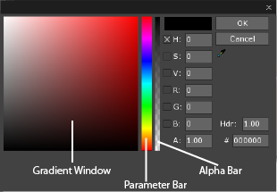
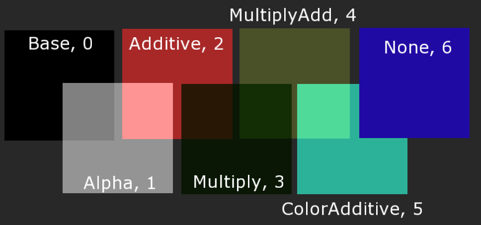

BaseSprite
While not being a class that is directly accessed by the User, both the Sprite class and the SpriteText class inherit directly from the BaseSprite class, making it an important class on its own. Any of the Properties of the BaseSprite class can be directly used by either Sprites or SpriteText, changing many of the visual aspects of the Object.
Using the Color Picker
The base color of a Sprite can be changed in several different methods:
- Entering the Hex Code of the desired color into the Color Picker. For example,
FF0000for Red. - Click and Drag the Eye Dropper tool onto the desired color on screen.
- By setting the Color property as a
Real4within a ZilchScript. - Choosing the desired color in the Color Picker either in the gradient window or by directly setting either the RGBA or HSV values.

As you can see, there are several parameters that can be changed using the Color Picker:
- (H)ue: The base color of the Sprite object, ranging between 0 and 360
- (S)aturation: How deep the base color is, ranging from 0 to 100
- (V)alue: How bright the color is, ranging from 0 to 100
- (R)ed: Between 0 and 255
- (B)lue: Between 0 and 255
- (G)reen: Between 0 and 255
- (A)lpha: Transparency, ranging between 0 and 1
- HDR: High Dynamic Range, which allows for the Sprite to show a higher luminosity value than normal
- #: Hex Code of the current color
Depending on the current parameter chosen the Color Picker will change how it looks, however two things will always remain constant:
- The Parameter Bar will always adjust the currently selected parameter between 0 at the bottom, and that parameters maximum value at the top
- The Alpha Bar will always adjust the Alpha value, from 0 at the bottom to 1 at the top
Using these the color can be changed to any shade needed. Alternately if either the HSV or RGB values are known, they can also simply be typed in.
Blend Modes
Blend Modes are used to tell the program how to mix two or more overlapping Sprites. In instances of overlap,the Blend Mode of the Sprite on the topmost layer is always used. There are several types of Blend Modes built into the Zero Engine.
- Alpha: The visibility of the Sprite is determined by the Alpha value. The lower the value, the more transparent, or “see-through”, the Sprite becomes
- Additive: The currently selected Sprite adds the RGB value of the Sprite beneath it to its own RGB value, creating a new color by mixing the two. It also is the only other Blend Mode that uses the Alpha value
- Multiply: The currently selected Sprite multiplies its own values with those of the Sprites beneath it to create a new value, much like Additive. However, Additive tends to create a brighter overall color whereas Multiply will create a darker one
- MultiplyAdd: First uses the Multiply Blend mode, followed by Adding the created color to the Sprites original color
- ColorAdditive: Similar to Additive, this will add the RGB value of any Sprites beneath it to it’s own RGB value. However unlike Additive, this does not have Alpha Blending.
- None: The Sprite will always be a solid color, so long as it’s on the topmost
SpriteLayer
The following image illustrates how the different Blend Modes–and the corresponding layers they are placed on–affect similar Sprites.
